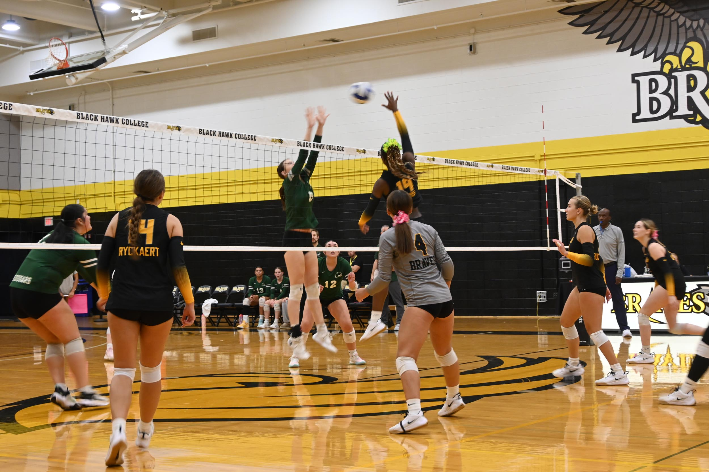

Welcome
Volleyball is one of my all time favorite sports, it is a fast-moving sport played by two teams on opposite sides of a net. The goal is to send the ball over the net and make it land on the other team's side of the court. I love volleyball because every player has a role, and a great play depends on teammates working together. A pass, set, and hit can happen in just a few seconds, so everyone has to stay ready and communicate.

Basic Rules
- Each team has six players on the court.
- A team can touch the ball up to three times before sending it over the net.
- Players rotate positions when their team wins the serve from the other team.
- A team scores a point when the ball lands on the opponent's side or the opponent makes an error.
Why I Love Volleyball
My favorite part of volleyball is the energy during a long rally. When my teammates call for the ball, make a tough save, and celebrate together, it feels like everyone contributed to the point.